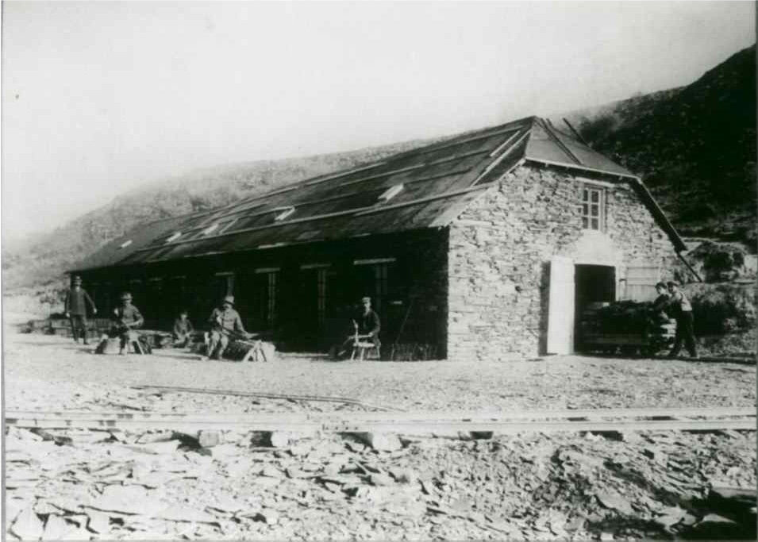

<div data-role="page" id="gww_aufseherhaus">
    <div data-role="header">
        <h1>Grubenwanderweg</h1>
        <div data-role="navbar" data-iconpos="top">
            <ul>
              <li><a data-rel="back" data-transition="slide" href="index.html" data-icon="arrow-l">Zur&uuml;ck</a>
              <li><a href="../../img/karte.jpg" data-icon="location" rel="karte" class="swipebox">Karte</a></li>
            </ul>
          </div>        

    </div>


    <div role="main" class="ui-content">
        <h3 class="ui-bar ui-bar-a ui-corner-all">Haus der Grubenaufseher</h3>
        <div data-role="collapsible-set">

            <div data-role="collapsible">
                <h3>Geschichte</h3>
                <p>Die Grube ...</p>
            </div>        
            <div data-role="collapsible">
                <h3>Bilder</h3>
                <ul data-role="listview" data-inset="true">
                    <li>
                        <a href="img/schuerzig.jpg" class="swipebox" title="Spalth&uuml;tte" title="Josef M&uuml;ller">
                            
                            
                            <!--h2>Bistro von innen</h2-->
                            
                            <p>Josef M&uuml;ller vor der Grube St. Josef</p>
                            <!--p class="ui-li-aside">GWW</p-->
                        </a>
                    </li>
                </ul>   
            </div>
        </div>
    </div>

    <script>
        $(document).on("pagecreate",function(){
            //alert("pagecreate event fired!")
            $('.swipebox').swipebox();
        });
    </script>
    <!--div data-role="footer">
        <p><a href="#main" data-direction="reverse" class="ui-btn ui-shadow ui-corner-all ui-btn-b">Inhaltsverzeichnis</a></p>
    </div-->
</div>